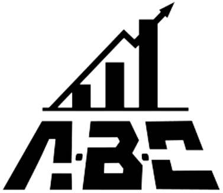

？こんな悩みを抱えていませんか？
起業したけど、売上が良くならない
思い通りに集客ができない
毎月の収益を確保するのが大変
もっと経営は上手くいくと思っていた
時間に追われて、自由な時間が無い
私も初めはそうでした...
会社員時代に技術系教育の担当をしていた頃、「どうやったら部下達に技術を理解し、身につけてもらえるのか？」「どのように教えたら成長してくれるのか？」を常に考えていました。
一方、人に教えることを仕事にしているなら、自分ができてあたりまえ。自分で再現できないものを人に教えるわけにはいかなかったため、起業を志しました。
しかし当初の結果は惨敗。お客様も集まらないし、商品も売れないし、収益は不安定な上に忙しくなって時間が無い・・・
「これが企業の真実か・・・」
そう思い悩んでたある日、ビジネスにとって欠かせない”とある”ことがきっかけで事業が大きく好転し、これらの悩みは全て無くなりました。
はじめまして！
前田廉と申します！
【これまでの経歴】
| ・2010年4月 | 一般企業に入社。自動車整備士として技術教育を担当。 |
|---|---|
| ・2019年7月 | 個人事業主として中古車販売店を経営。独自のノウハウを活かし、初年度で5,000万円の売上、年収1,600万円を達成。 |
| ・2020年12月 | 食品販売の店舗を２店舗、日用品販売の物販を１店舗運営 |
| ・2021年1月 | 株式会社アリエルを設立独自のノウハウを活かした企業家育成コンサルティングのサービスを開始 |
| ・2022年6月 | コンサル生の実績を踏まえ、企業家育成スクール「A.B.C」を開校し、校長に就任。 |
数多くの経営の実績を踏まえ、ビジネスに関する前田独自のノウハウが蓄積されてきました。
私だけが上手くいくのはもったいない。もっと多くの人にも経営の真髄を理解してもらいたい。
そんな想いがコンサルティングを始めるきっかけとなり、2022年6月にはついに「A.B.C(Arl・L Business Club)」のスクールを開校することができました。
これまでのビジネスの常識に捉われず、常に時代に合ったオンラインを使った集客を得意とします。集客で大切なことは、お客様の数よりも、圧倒的にお客様の質です。
このことに気付いたことでビジネスの基礎的な設計から見直すこととなり、今の独自のノウハウが形成されました。
そして質を大切にすることから、売れる商品の作り方までスクールでは生徒達にそのノウハウを伝授しています。
なぜ公式LINEを
始めたんですか？
これまで数多くの企業家、特にビジネスを始めたばかりの方々を指導してきました。
その中で感じたことは、日本人の多くの人がビジネスやお金について正しい知識を教わっていないことでした。
海外、特にアメリカでは、お金を稼ぐことで賞賛の嵐ですが。日本では、お金を稼ぐことを悪と認識される傾向があります。
そして驚くことに、日本の企業は今でも社員の採用に関し、学歴にこだわっています。
中卒、高卒の学歴はレベルが低いと誰が決めたのでしょうか？
大学、大学院卒業した人を誰が優秀と決めたのでしょうか？
そして、どの学校がビジネスについて教えてくれたでしょうか？
教わっていないから、知らなくて当然です。
知らないから、ビジネスが上手くいかないのも当然です。
だからこそ、前田からの情報を受け取ってもらいたいという想いが公式LINEを始めるきっかけとなりました。
無料で大丈夫なの？
今の時代、ビジネスのノウハウ自体はインターネット上で情報がありふれています。
昔はノウハウそのものに価値があったため、有料で情報が販売されることが多くありました。
しかし情報はSNSを通じ、簡単にマネをされたり情報が漏洩するようになり、情報そのものの価値は下がってきました。
例えば、音楽。昔はレコードやCDが多く販売されてた時代は、売れる音楽さえ作れば不労所得のような世界でした。
しかし違法に音楽が配信されたり、データが個人間でやりとりされるようになってからは、CDそのものが売れなくなってきました。
そう、簡単に情報は漏洩する時代になってきました。
だからこそ、個人でインターネットから情報を収集し、実践を繰り返せば私からの公式LINEの配信は不要ということになります。
ただし、数ある情報から正しい情報は取捨選択できますか？
情報は収集できますが、正しい情報を選別できるかは別問題です。
・自分で情報を集めて、取捨選択しますか？
・前田から、ビジネス成功した情報を直接受け取りますか？
取捨選択の時短になるのであれば、前田から取り敢えず情報をもらうだけもらっても損は無いと思いませんか？
情報そのものの価値は無料、だからこそ、前田が公式LINEで発信する情報も無料です。
公式LINE登録者限定
今なら特典がつきます！
今回、前田の公式LINEに登録して頂いた方限定で
集客につながるSNS設計と運用 集客につながるSNS設計と運用
〜虎の巻〜 〜虎の巻〜
・SNS設計の重要なポイント３つ ・SNS設計の重要なポイント３つ
・売りたい商品の設計方法 ・売りたい商品の設計方法
・集客を伸ばす９つのテクニック ・集客を伸ばす９つのテクニック
・各SNSの特徴を活かした運用戦術 などなど ・各SNSの特徴を活かした運用戦術 などなど
を特典としてプレゼントします！
これは冒頭でお話しした通りですが、集客で大切なことは、お客様の数よりも質です。
実は新規顧客を獲得することよりも、商品のファンを作り、リピートしてもらう方が安定した収益を確保することができます。
前田の公式LINE登録者限定で、SNSの運用にフォーカスしたノウハウを公開します！
大々的に広告を打つことは無いですが、このページを最後まで読んでくださったあなたには、少しでも成功者が増える企業家を増やしたいという、前田の想いを受け取ってもらえると大変嬉しく思います。
それでは、前田の公式LINEであなたにお会い出来るのを楽しみにしております！